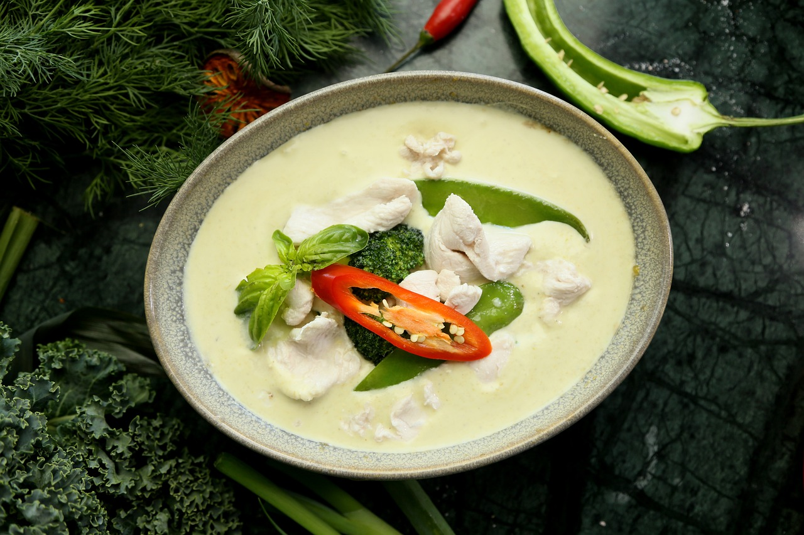

Jaxson's Famous Green Thai Curry

The most amazing green thai curry recipe you'll ever try!
Get the ingredients and follow the steps below!
Ingredients
- 225g of new potatoes, cut into chunks
- 100g green beans, trimmed and halved
- 1 garlic clove
- 400m can of coconut mil
- 2 tsb of Thai fish sauce
- 450g boneless skinless chicken, cut into bite sized pieces
- Boiled rice to serve
Steps
- Put 225g new potatoes, cut into chunks, in a pan of boiling water and cook for 5 minutes.
-
Add 100g trimmed and halved green beans and cook for a further 3 minutes, by which time both should be just tender but not too soft. Drain and put to one side.
-
In a wok or large frying pan, heat 1 tbsp vegetable or sunflower oil until very hot, then drop in 1 chopped garlic clove and cook until golden, this should take only a few seconds. Don’t let it go very dark or it will spoil the taste.
-
Spoon in 1 rounded tbsp Thai green curry paste and stir it around for a few seconds to begin to cook the spices and release all the flavours.
-
Next, pour in a 400ml can of coconut milk and let it come to a bubble.
-
Stir in 2 tsp Thai fish sauce and 1 tsp caster sugar, then 450g bite-size chicken pieces. Turn the heat down to a simmer and cook, covered, for about 8 minutes until the chicken is cooked.
-
Tip in the potatoes and beans and let them warm through in the hot coconut milk, then add 2 finely shredded lime leaves (or 3 wide strips lime zest).
-
Add a good handful basil leaves, but only leave them briefly on the heat or they will quickly lose their brightness.
-
Scatter with lime to garnish and serve immediately with boiled rice.
Return to Home